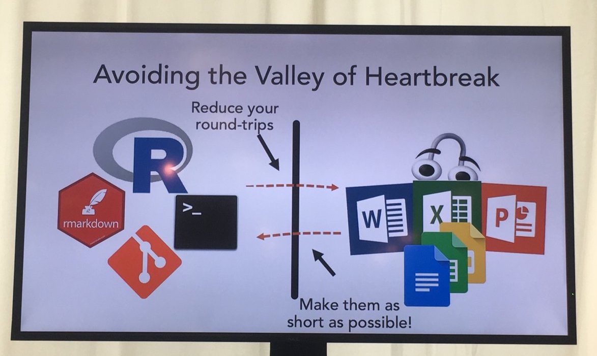

#install.packages("tidyverse")
#install.packages("naniar")
library(tidyverse)
library(naniar)
vis_miss(airquality) # a base R data setMy favorite takeaways from attending the 2019 New York R Conference.
June 6, 2019.
In early May I attended the New York R Conference. There were 24 speakers, including my coworker at Weill Cornell Medicine, Elizabeth Sweeney! Each person did a 20-minute presentation on some way they use R for their work and/or hobbies. There was a ton of information, and even though not all of it was directly useful for my workflow as a statistical consultant in an academic setting, I really enjoyed being around so many people who love R.
I’ve linked some videos of my favorite talks and put together some the topics/packages/functions I found most intriguing or useful in my day-to-day work as a research biostatistician. (This was originally a presentation for my biostatistics team’s computing club.)
Visualizing data with naniar
Brooke Watson, a data scientist at the American Civil Liberties Union, gave a great presentation on how she uses R to defend immigrants. She shared several data wrangling tips. One new function for me was naniar::vis_miss() to visualize your missing data quickly.
It returns a ggplot2 object so you can edit titles, colors, etc. if necessary. You can also add various sorting and clustering arguments to make it easier to see patterns of missingness in your data.
Checking out data differences with daff
Brooke also gave a demo for a neat package to check if and where differences in two data sets are occurring.
#install.packages("daff)
library(daff)
dat1 <- data.frame(A = c(1:3), B = c(T,F,T))
dat2 <- data.frame(A = c(1:4), C = c("apple",NA,NA,"banana"))
my_diff <- diff_data(dat1, dat2)
my_diffDaff Comparison: 'dat1' vs. 'dat2'
+++ ---
@@ A C B
+ 1 apple TRUE
2 <NA> FALSE
3 <NA> TRUE
+++ 4 banana <NA> I thought this would be useful for when you receive new data sets and want to make sure column names, patients, etc. haven’t changed. Check out the full documentation here.
Gohelverse
Noam Ross shared code for editable figures using David Gohel’s officer and rvg packages. I shared some example code for my team on github after I saw him present it at an R-Ladies event in the fall. Essentially you can run some pretty simple lines of code to output figures (base R, ggplot2, or otherwise) as editable figures in Powerpoint. Noam reminded us that whoever you give these figures to will now be able to edit anything, even data points, so keep that in mind before you freely give away editable figures… :)
Going from RMarkdown to Word, and back again with redoc
Noam also shared his new package, redoc, which allows you to reload an Rmd-generated word file back into R as a modified Rmd file.

This is part of his goal to decrease the pain of “the valley of heartbreak.” 
Installation command is:
#remotes::install_github("noamross/redoc")You may need to update several packages to get it to run correctly, but after that the main commands are just redoc and dedoc. To see for yourself, try running my github code, making some changes to your word doc, and reloading back into Rmarkdown with the dedoc() function.
Pipelines in drake

This could definitely be an entire computing club presentation… but for long projects that you have to redo with new data often, drake is becoming really popular. Amanda Dobbyn gave an awesome presentation and you can see her slides here.
A super informative bookdown guide by the authors can be found here. Essentially their motto is “what gets done stays done” so that you are not redoing work you’ve already done in order to update your results. Yet, you’re still redoing what needs to be done in a reproducible way!

Git merge conflicts
I went to a whole-day workshop on Git so if you’re interested in talking more about this let me know. BUT the biggest thing I learned was that if you are ever using Git and find your code has strange characters like >>>>>>>> HEAD followed by ======== and a long set of letters/numbers, this means you have a merge conflict. It’s meant to be a flag so you know where to fix the differences in your two files you’re trying to version control! I spent days struggling with this problem before, so I thought I’d pass the message along in case anyone runs into it someday. :)
Talks to check out
Some of my favorite talks from the conference were…
-Emily Robinson’s accessible instructions for how to make a package with usethis Jaqueline Nolis’ really funny talk on how neural nets aren’t actually hard at all -Andrew Gelman’s discussion on “solving all your statistical problems with p-values” (but he’s a Bayesian, ha ha)
Takeaways
You can check out tweets from the conference by searching the hashtag #rstatsnyc on Twitter
Check out the R-Ladies NYC meetups and New York R meetups!